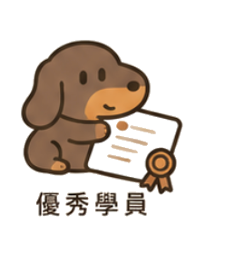

毛孩社交學院 PAWRADISE
S1・狗狗幼稚園 · 學期進度報告
2026 年 7 月
📷點擊加
狗狗大頭相
狗狗大頭相
學員 STUDENT
Mochi 糯米
A
行為評級
三大核心指標 · CORE PROGRESS
環境適應時間
▼ 80%
越短越好 · Settling — 到校後安定所需時間
緊張吠叫次數
▼ 70%
越少越好 · Calmness — 每堂平均
主動社交互動
▲ 6×
越多越好 · Social Play

下學期建議 · 家課
·每日 10 分鐘嗅聞遊戲，釋放壓力建立安全感
·散步遇到其他狗狗時保持冷靜即獎勵
·每日「坐低等待」練習，鞏固基本禮儀
建議續報 S1・狗狗幼稚園 新學期
鞏固社交基礎，向 A+ 穩定社交犬進發
導師 陳 Karen
2026.07.07 發出
PAWRADISE 毛孩社交學院